Aim
Develop an evidence-informed workflow for reconstructing lost medieval architecture using HBIM modelling and typological comparison.
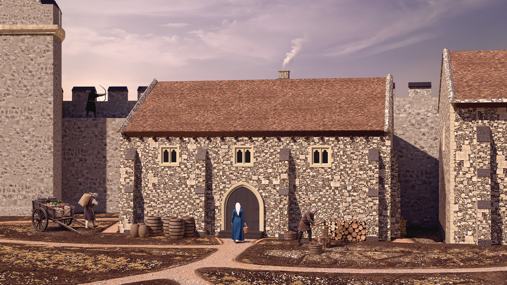
DM3103
Reconstruction of a lost medieval kitchen at Winchester Castle using historical evidence and HBIM modelling.
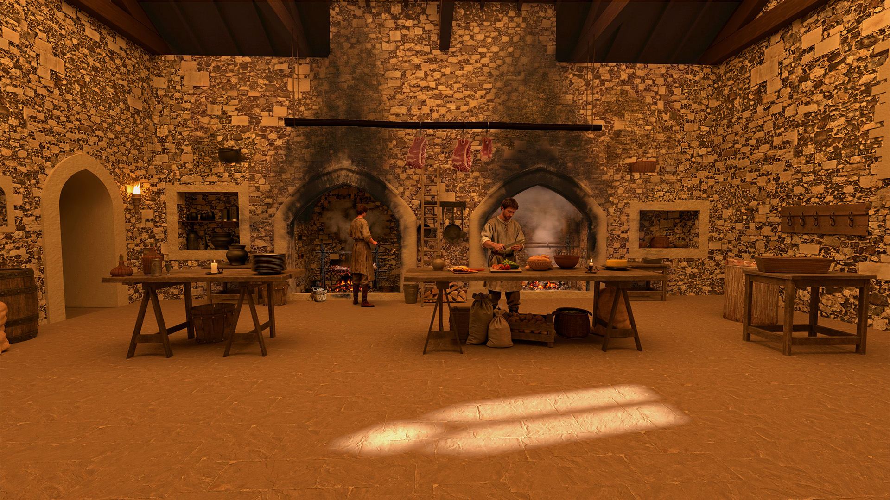
This project presents the digital reconstruction of the Great Kitchen at Winchester Castle, developed through an evidence-informed and typology-based workflow. The building no longer survives, and only limited documentary references remain, including records of furnaces and associated spatial elements (Portal, 1899). As a result, the reconstruction combines available historical evidence with comparative analysis of medieval kitchens to produce a plausible architectural interpretation, informed by studies of kitchen function and spatial organisation (Brears, 2008).
The project was developed using HBIM methodology in Revit, allowing the building to be constructed through staged modelling, from massing and structural logic to architectural detailing. The final output integrates both exterior and interior visualisation, situating the reconstructed kitchen within the wider castle environment and representing its functional use through spatial and atmospheric development.
The project responds to a client brief focused on the reconstruction of lost medieval buildings for a heritage publication. The client’s objective is to demonstrate how historical structures can be digitally rebuilt using a combination of documentary evidence, typological comparison, and HBIM workflows. This includes not only the final visual outcome, but also the process of interpretation and decision-making required when working with incomplete historical data.
Within this context, the project aligns with the client’s emphasis on developing structured modelling workflows in Revit, where architectural elements are constructed progressively and justified through reference-based reasoning. The use of comparative sources, such as medieval kitchen studies and surviving examples, supports the interpretation of missing architectural information and reflects the methodological approach outlined in the client’s proposal.
The primary objective of this project was to develop an evidence-informed approach to reconstructing lost medieval architecture, combining historical research, typological analysis, and HBIM modelling. This included translating limited documentary evidence into a coherent spatial model, while maintaining clear reasoning and acknowledging areas of uncertainty.
A key personal aim was to build on previous work developed on Winchester Castle, moving from defensive structures toward internal spaces and functional architecture. This project provided an opportunity to continue that context while improving the overall quality of the work, particularly in terms of material application, visual realism.
Another objective was to develop technical skills in Revit as a new modelling platform. This required adapting to parametric workflows and structured modelling, which differed significantly from previous experience. The process involved improving both efficiency and understanding through more controlled and consistent learning methods.
The final objective was to produce a resolved visual outcome that represents both the architectural form and the functional use of the Great Kitchen, while also contributing to a strong and cohesive body of work for final portfolio presentation.
The scope of this project focused on the reconstruction of a single key service building within Winchester Castle: the Great Kitchen. The work included both exterior and interior development, moving beyond a purely architectural model to a spatial and visual representation of how the building could have functioned in use.
The final outcome consists of a structured HBIM model developed in Revit, supported by a complete visual workflow in Blender and post production. The project also includes a documented development process presented through a Milanote board, which records each stage from concept exploration to final output.
The final outputs present an evidence informed interpretation based on available documentation, typological comparison, and practical modelling decisions. The work establishes a foundation for future expansion to additional castle interiors, such as the King’s Chamber and other service buildings, continuing the same historically grounded HBIM approach.
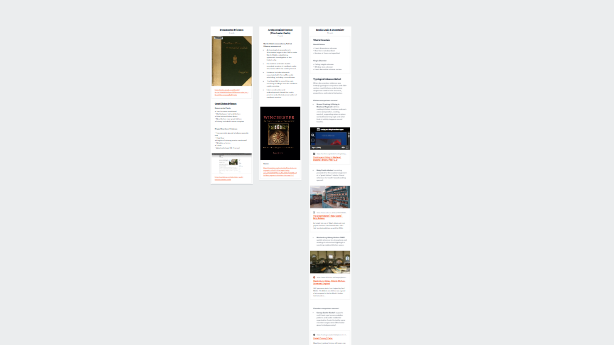
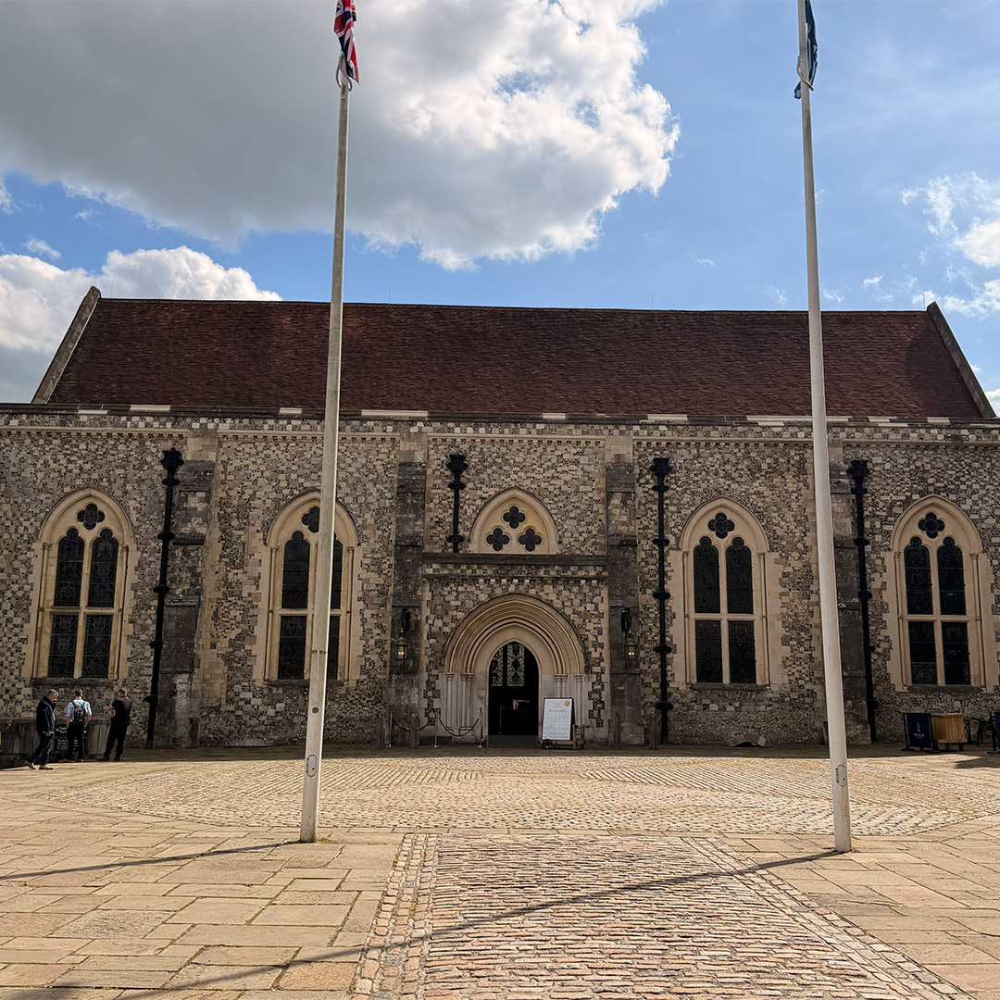
The reconstruction of the Great Kitchen is grounded in the historical and archaeological context of Winchester Castle, one of the most important royal centres in medieval England. Established shortly after the Norman Conquest, the castle developed significantly during the 13th and 14th centuries, functioning as a royal residence, administrative centre, and political hub (Ottaway, 2017).
By this period, castles were no longer defined only by defence, but by their ability to support complex daily operations. Winchester Castle formed part of a wider system of buildings that worked together, including ceremonial, residential, and service spaces. The Great Hall, which survives today, represents the most visible element of this system, acting as a space for governance, feasting, and display of royal authority.
Supporting this central function were service buildings such as kitchens, storage areas, and preparation spaces. These were essential to the operation of the household and reflect the scale of medieval royal life. As highlighted by Creighton (2002), castle environments were organised through hierarchy and use, where each building had a defined role within a larger spatial structure.
A key challenge in studying Winchester Castle is the uneven survival of its buildings. While the Great Hall remains well preserved, many internal structures, including service buildings, have been lost or only partially recorded. Archaeological assessment shows that evidence for these structures is often fragmented, limiting the ability to reconstruct them directly (Ottaway, 2017).
This condition shapes the approach of this project. The Great Kitchen cannot be reconstructed as a precise replica, but must be understood through its historical context, supported by documentary references and comparative analysis. This establishes a foundation where interpretation is guided by evidence, rather than assumption.
The clearest evidence for the Great Kitchen comes from documentary references linked to the Great Hall. These records note “two furnaces in the greater kitchen” (Portal, 1899), confirming both the kitchen’s existence and its role in large scale food preparation. While this reference establishes function, it provides no architectural detail such as dimensions, layout, or construction. This reflects a broader limitation of medieval records, which tend to document household activity and operational requirements rather than building form (Woolgar, 1999). Even so, the furnace reference anchors the reconstruction in documented fact and defines the key fixed element around which the spatial interpretation is developed.
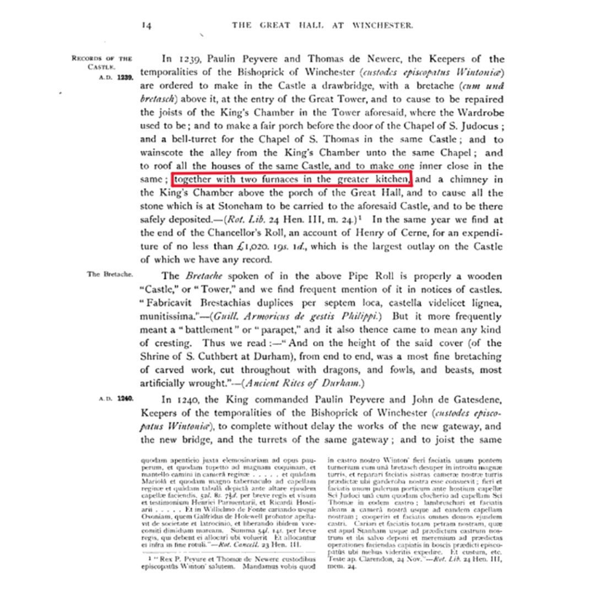
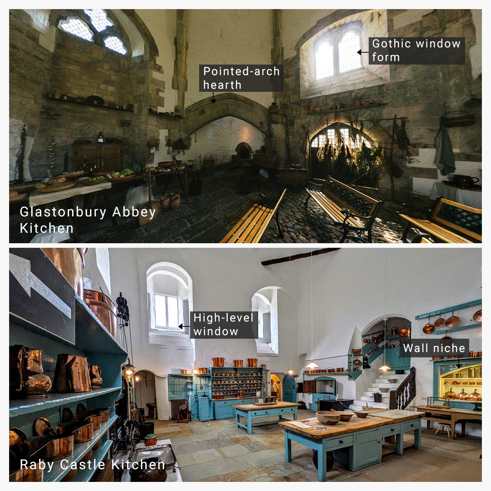
To support the interpretation of the kitchen’s layout and key architectural features, typological comparison was used as a method for addressing missing information. This involves studying similar buildings from the same period to identify common patterns in construction, layout, and function (see Fig. 2.3).
Medieval kitchens such as Glastonbury Abbey Kitchen and Raby Castle provide valuable insight into how large service spaces were organised. These examples demonstrate consistent architectural features, including thick masonry walls, large arched cooking structures, and vertically organised ventilation systems.
Research by Peter Brears shows that medieval kitchens were structured around clearly defined working zones, with areas for preparation, cooking, and service arranged according to function (Brears, 2008). This organisation reflects the practical demands of large households, where efficiency and movement were essential.
Additional studies of medieval domestic life support this understanding. Woolgar (1999) describes how large households operated through structured routines of food preparation, storage, and distribution. These insights reinforce the idea that kitchens were highly functional environments, shaped by activity rather than formal design.
Typological comparison in this project was used to support decisions where direct evidence was unavailable. Comparative examples informed the interpretation of hearth design, window forms, openings, and internal layout, helping to establish a believable medieval kitchen environment. These references were used selectively and adapted to the architectural context of Winchester Castle.
The Great Kitchen was interpreted as part of the wider working system of Winchester Castle, not as an isolated building. Medieval castles included ceremonial, residential, and service spaces arranged around function, access, and hierarchy (Creighton, 2002). In this project, that helped define the kitchen as a practical service building supporting the Great Hall.
This logic influenced the placement of entrances and circulation. The model includes a main entrance and a secondary service access, allowing movement of food, materials, and workers between the kitchen and surrounding castle spaces. Internally, the layout follows this same practical logic, with working areas arranged around preparation, cooking, storage, and service.
This approach keeps the reconstruction focused on use and movement, ensuring that the kitchen works as a believable service space within the castle environment.
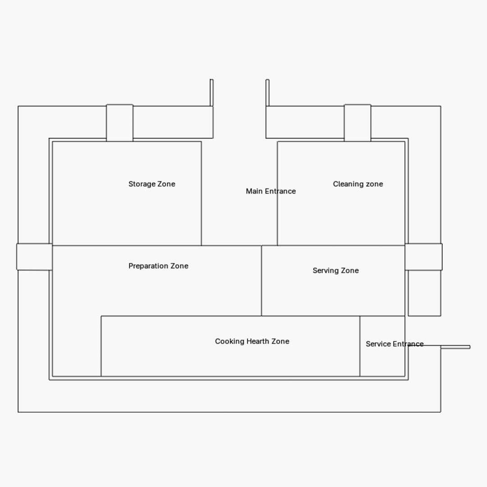
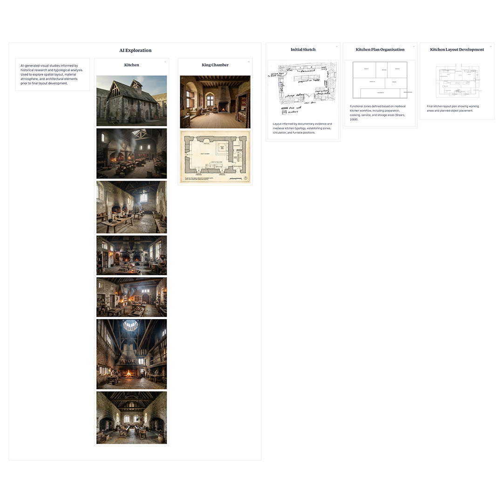
The initial stage of the design process focused on exploring spatial organisation and layout through sketching and visual studies (see Fig. 3.1). Early ideas were developed using a combination of hand sketches and AI-generated imagery to understand how the kitchen could function spatially.
These explorations were then refined into a structured layout plan, defining key working areas such as preparation, cooking, storage, and cleaning. This layout was not intended as a final design, but as a planning tool to guide the placement of elements during modelling and visual development.
The layout development was informed by typological understanding of medieval kitchens, where space is organised based on function and workflow rather than formal design (Brears, 2008).
The modelling process began in Revit with the development of a basic massing model to establish the overall footprint and proportions of the Great Kitchen. This stage focused on defining the spatial volume before introducing architectural detail, allowing a clear understanding of scale and structure.
The selected dimensions (approximately 12 × 9 metres) were based on typological comparison with medieval service buildings, ensuring the structure remained proportionally smaller than ceremonial spaces such as the Great Hall (Brears, 2008). The model was then progressively developed through a staged workflow, moving from primary geometry to structural definition and finally to architectural detailing.
This process followed HBIM principles, where the model is not created in a single step but built incrementally, allowing decisions to be reviewed and refined at each stage.
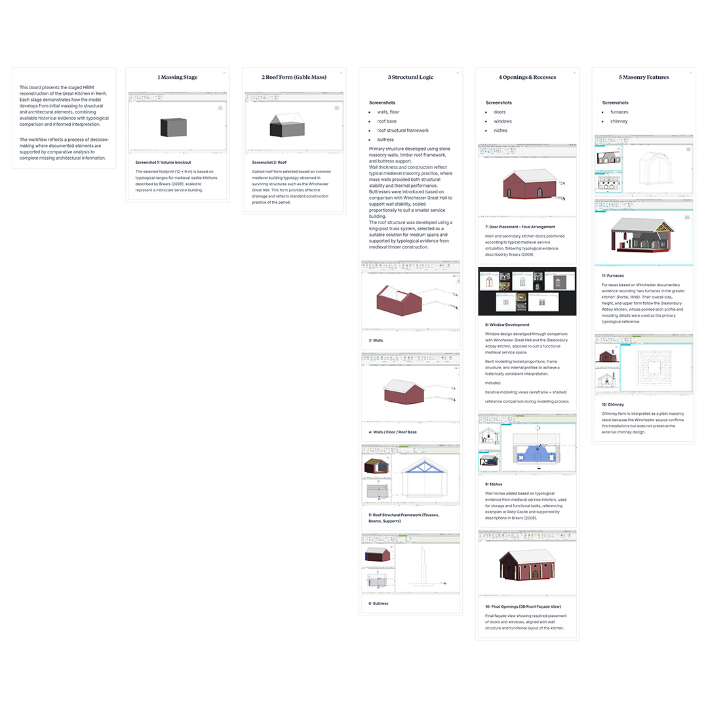
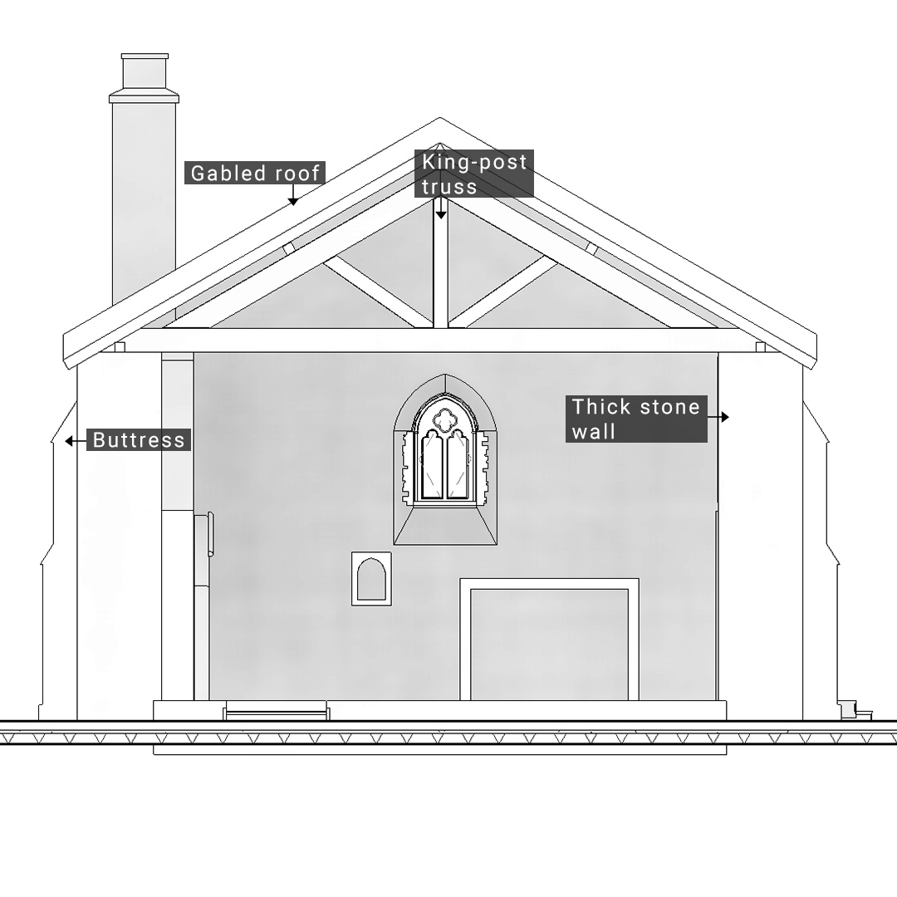
The structural system was developed based on a combination of historical evidence and typological comparison. The building was modelled with thick stone masonry walls, reflecting typical medieval construction where wall mass provided both structural support and thermal stability (Creighton, 2002).
The roof was developed as a gabled form, which is widely observed in medieval architecture due to its effectiveness in drainage and structural simplicity. The internal roof structure was modelled using a king‑post truss system, selected as a suitable solution for medium‑span buildings and commonly associated with medieval timber construction.
Buttresses were introduced based on visual and structural comparison with the Great Hall at Winchester. These were scaled proportionally to suit a smaller service building, providing additional wall support without replicating the monumentality of ceremonial architecture.
The development of the model required decisions where the Winchester evidence confirmed function but did not preserve complete architectural form. To manage this, each element was approached through a clear sequence: first identifying documented evidence, then comparing relevant medieval examples, and finally adapting the interpretation to the Winchester Castle context.
The clearest example is the cooking area. The documentary evidence records “two furnaces in the greater kitchen” (Portal, 1899), confirming the presence of two fixed cooking installations. However, the source does not describe their exact shape or construction. In the model, these were interpreted as large recessed arched hearth structures, informed by surviving medieval kitchens such as Glastonbury Abbey Kitchen and Raby Castle Kitchen. This allowed the documented function of the furnaces to be represented through a believable medieval cooking form without claiming an exact reconstruction of the lost Winchester structures.
A similar approach was used for openings and wall details. Window placement was developed in response to both function and available wall space. The front elevation contains the main entrance and therefore allows less space for large openings. For this reason, smaller pointed-arch windows, informed by Glastonbury Abbey Kitchen, were used above the entrance area. In contrast, the side elevations allowed wider openings, leading to the use of larger window forms adapted from the surviving Great Hall at Winchester. These were simplified proportionally to suit a smaller service building while maintaining a visual connection to the wider castle architecture.
This process allowed different references to be combined selectively, ensuring that the reconstruction remained connected to the Winchester context while still addressing missing architectural information through typological interpretation.
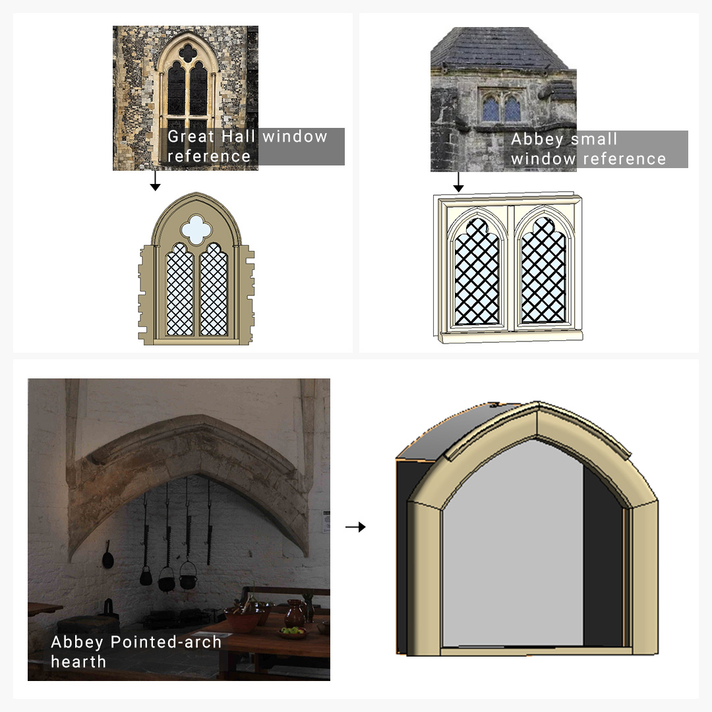
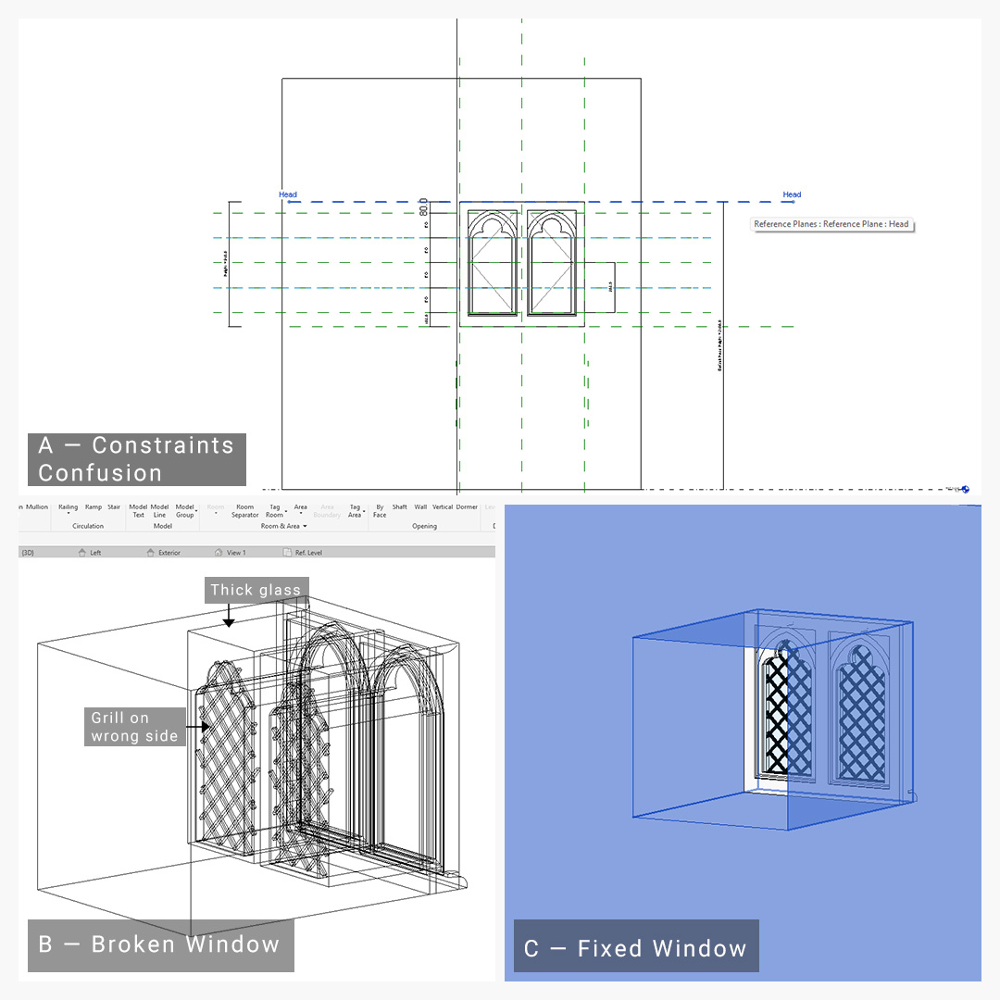
One of the main challenges in this project was adapting to Revit as a structured, parametric modelling environment. Unlike Blender, Revit requires precise control of reference planes, constraints, and system based relationships. This initially slowed the workflow and led to issues such as incorrect geometry behaviour, constraint conflicts, and difficulties controlling how elements were placed or aligned. These problems were not caused by software limitations but by my inexperience with Revit’s parametric logic. An example of this early confusion is shown in Fig. 3.5A.
A particularly significant challenge occurred during the creation of custom window families. Early attempts mixed project based modelling with family based modelling, used mirrored geometry, and relied on default Revit windows that contained complex nested constraints. As a result, when the edited family was loaded into the project, the geometry behaved unpredictably: the glass extrusion became extremely thick, and the diamond shaped grill flipped to the back of the window. This behaviour is illustrated in Fig. 3.5B. These issues were caused by incorrect reference plane origins, broken constraints, and inherited parameters from the default family.
To resolve this, I rebuilt the window family using a clean set of reference planes, avoided mirrored geometry, and recreated the components directly within the family editor. This produced a stable, correctly oriented window that behaved as expected when placed in the project, shown in Fig. 3.5C. Including screenshots of the initial constraint confusion, the broken window behaviour, and the final corrected version visually demonstrates this learning process.
Another challenge was my early reliance on AI generated modelling advice, which occasionally led to overly complex or unclear methods. Transitioning to structured tutorial based learning significantly improved my understanding of Revit’s logic and increased workflow efficiency.
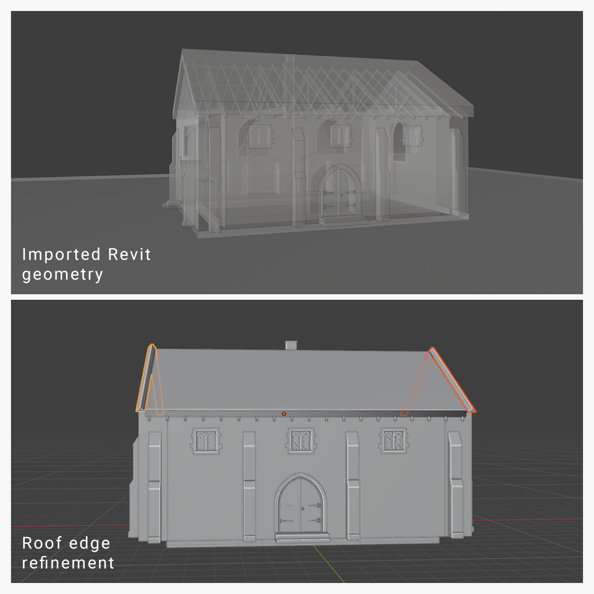
The Revit model was exported into Blender to begin the spatial and visual development stage. At this stage, the focus shifted from structured HBIM modelling to scene composition, architectural refinement, and visual development. The imported geometry was reviewed to ensure correct scale, alignment, and material behaviour before progressing further.
Several architectural refinements were also developed during this stage, particularly around roof edge detailing and exterior form. These adjustments helped strengthen the connection between the reconstructed kitchen and the architectural language of Winchester Great Hall, which informed aspects of the exterior design throughout the project. Blender provided a more flexible environment for refining these visual and geometric details while continuing the wider scene development and rendering workflow.
The exterior scene was developed by placing the reconstructed kitchen within the wider castle environment created in a previous project stage. This allowed the building to be understood not as an isolated object, but as part of a functional and inhabited medieval setting.
Scene composition was planned carefully using camera positioning and spatial hierarchy. The camera was placed at a human eye-level perspective to create a more grounded and readable view of the building. Rather than focusing only on architectural form, the aim was to establish context and scale through the surrounding environment.
Medieval castle environments were not formal or clean spaces, but working landscapes shaped by movement, activity, and use (Creighton, 2002). This influenced decisions such as ground treatment, object placement, and the introduction of subtle irregularity in the scene. Instead of creating a polished or idealised environment, the intention was to reflect a more natural and functional setting.
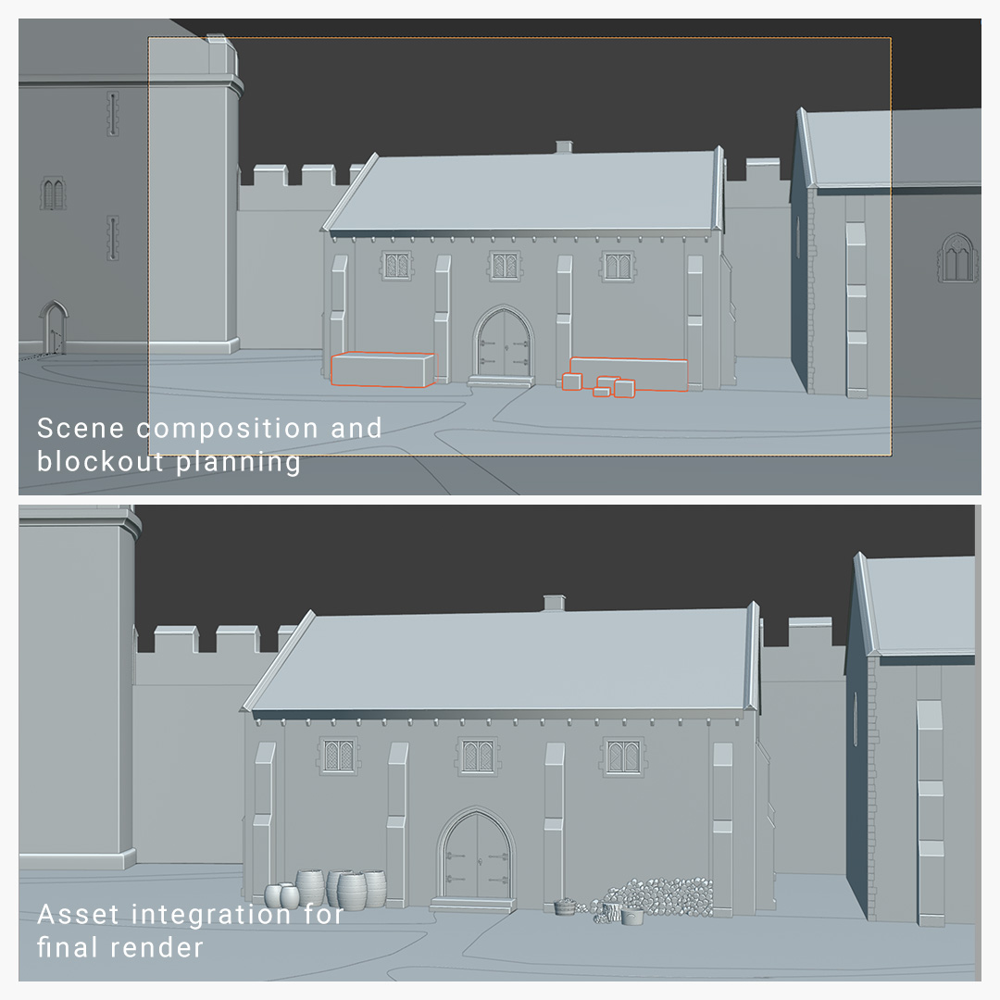
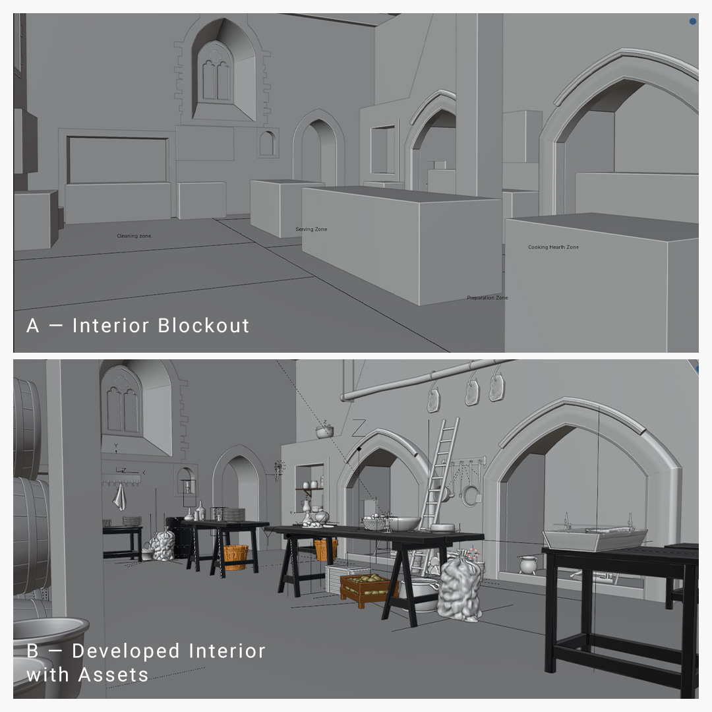
The interior scene was developed as a functional working environment based on the layout established during the concept stage. Initial blockouts were used to define preparation areas, cooking zones, storage, circulation paths, and planned object placement before introducing detailed assets (see Fig. 4.3A).
This staged approach helped organise the scene and maintain consistency with the original layout plan. Furniture and objects were positioned according to kitchen workflow, supporting preparation, cooking, storage, and cleaning activities within the space (see Fig. 4.3B).
Historical studies of medieval domestic environments describe kitchens as activity-based spaces organised around movement and task efficiency (Gilchrist, 2012). This understanding informed both the layout and furnishing process, helping establish a believable working environment.The interior atmosphere was developed through lighting, asset placement, and scene composition to support the visual character of an active medieval kitchen environment.
Lighting was tested progressively in Blender using V-Ray to refine the atmosphere and readability of the interior scene (see Fig. 4.4). The initial setup (A) used a neutral light, which made the environment visible but lacked the enclosed medieval atmosphere intended for the kitchen.
Further tests introduced warmer lighting and lower intensity levels (B). The final setup (C) created a softer and darker interior atmosphere while keeping the main activity areas readable within the scene.
These lighting tests helped establish the visual mood of the render before additional post-production effects were introduced later in the workflow.
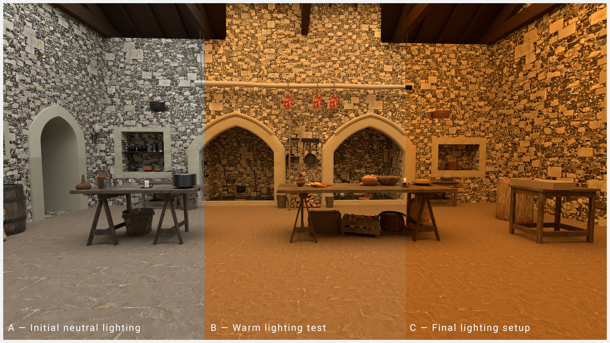
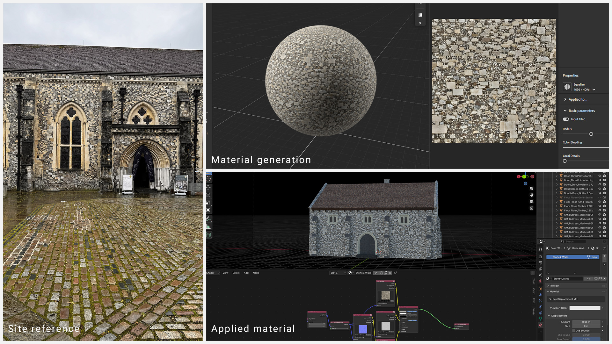
Material development focused on improving realism and creating a stronger connection between the reconstruction and the physical site. One of the main aims of this project was to improve material quality compared to the previous Winchester Castle project, where the textures felt less convincing and visually repetitive.
To address this, materials were developed using Adobe Substance Sampler with photographs taken directly from Winchester Great Hall (see Fig. 4.5). This allowed textures such as stone surfaces to retain colour variation, ageing, and irregular detail based on real site conditions rather than relying only on standard texture libraries.
The resulting materials were integrated into Blender and V-Ray as part of the final visual workflow. Using real-world references helped create a more believable medieval surface appearance and strengthened the visual authenticity of the reconstruction.
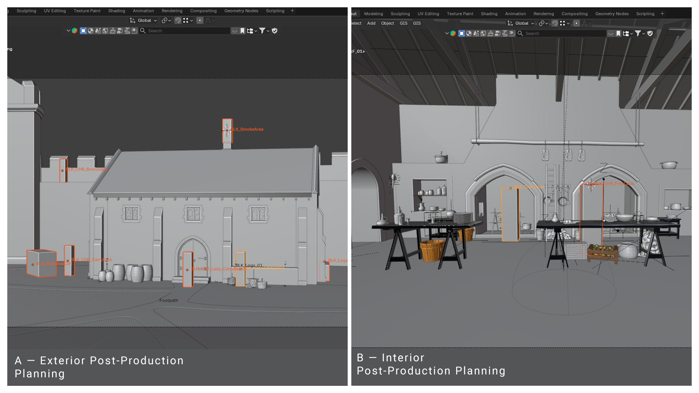
Post-production was planned as part of the visual workflow from the early stages of scene development. The base renders produced in Blender and V-Ray established the architectural structure, materials, and lighting, while additional elements such as people, smoke, and environmental details were planned separately for later enhancement.
To support this process, placeholder blocks were positioned in Blender during scene composition to plan areas for future post-production additions (see Fig. 5.1A–B). This helped maintain consistency between the rendered scene and the final edited visuals, while avoiding unnecessary complexity within the 3D environment.
This workflow allowed the main architectural scenes to remain organised and efficient, while still supporting more detailed visual storytelling during the final compositing stage.
During interior development, it became clear that adding highly detailed assets directly into the Blender scene significantly increased geometry complexity. Objects such as food, utensils, and character models affected viewport performance and rendering efficiency.
To manage this, part of the visual development was shifted into post-production. Elements that did not affect the core architectural structure—such as human activity, smoke, and fine environmental detail—were added later using Photoshop and AI-assisted post-production tools. This allowed the scene to remain efficient while still achieving a visually detailed result.
This approach established a more balanced workflow, where scene performance, visual quality, and final storytelling could be developed together without overcomplicating the 3D environment.
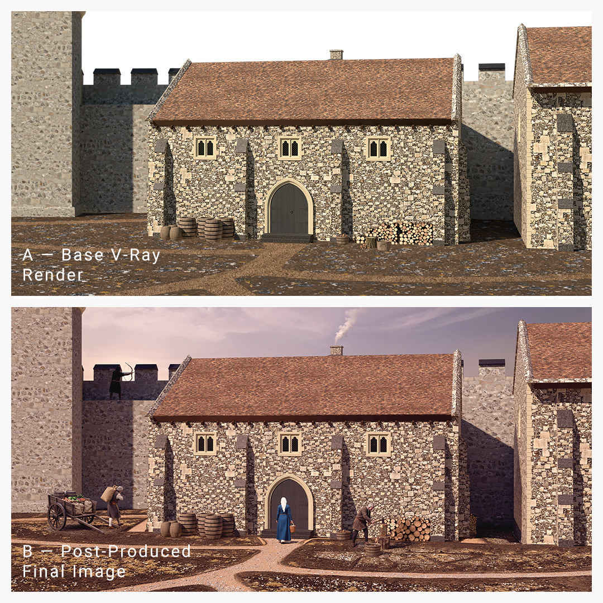
The final exterior and interior visuals combine rendered architectural space with post-production enhancement. The Blender and V-Ray outputs provide the structural and material foundation, while post-production adds atmosphere, activity, and narrative clarity.
This combined approach improves readability of the scene and helps communicate how the space could have been used. The final images therefore function not only as visualisations, but as interpretative tools that support understanding of the building.
These outputs were also developed with the client in mind, providing clear and engaging visuals that can be used beyond the academic context, including potential publication and public presentation.
Revit was used as the primary modelling tool to meet the client requirement for an HBIM-based reconstruction. This introduced a structured workflow where elements such as walls, roofs, and openings are defined through relationships, not as separate geometry.
At the early stage, this approach was challenging due to unfamiliar tools, constraints, and reference systems. This affected the speed of development, particularly when controlling parametric behaviour and aligning elements correctly. Over time, the workflow became more efficient, allowing the model to be built progressively from massing to detailed components.
This process marks a shift from previous projects, moving from purely visual modelling to a more system-based approach. Each element became part of a structured model, supporting clearer organisation and decision-making. This aligns with the HBIM method outlined in the client’s research, where reconstruction is developed through stages of evidence and interpretation.
The decision to adopt Revit was not only technical but also professional. It required adapting to a new tool within a limited timeframe while maintaining the expected quality of the final output. This experience contributed to a more organised and controlled approach to modelling.
While Revit supported the architectural model, the visual stage required a more flexible workflow. The project involved building a detailed interior and exterior scene with elements specific to a medieval kitchen, including furniture, utensils, and working areas. These were not available within Revit libraries for this period.
Following discussion with the client, Blender was used for visual development due to flexibility and familiarity. The model was transferred from Revit and developed further using V-Ray for rendering, allowing more control over composition, lighting, and atmosphere.
Material work was developed using Adobe Substance Sampler, where textures were created from photographs taken at the Great Hall. This improved consistency and reduced reliance on generic assets, building on previous experience and improving overall surface quality.
AI tools were used as part of the workflow in two specific areas. During the modelling stage, they supported understanding of Revit tools and basic problem-solving. In the final stage, AI was used in post-production to enhance visuals by adding effects such as smoke, fire, and small environmental details, as well as integrating character assets. This approach helped manage scene complexity and reduce rendering load, particularly in the interior where geometry was already dense and caused performance issues.
The workflow combines multiple tools within a single process, including Revit, Blender, V-Ray, Substance Sampler, Photoshop, and AI-based tools. Each was used for a specific purpose, allowing the project to move from structured modelling to a fully developed visual outcome. This reflects a practical approach to production, where different tools are integrated to achieve both technical accuracy and visual quality.
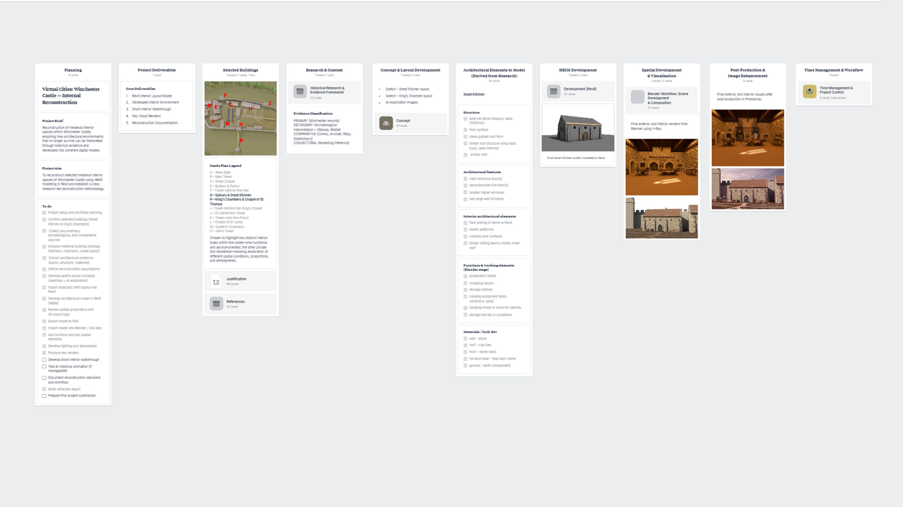
The project was delivered to the client through a combination of final visual outputs and a structured development record. In addition to the Revit model and rendered images, a Milanote board was created to present the full workflow from concept development to final visualisation.
The Milanote board played a key role in communicating the project. Rather than only showing final results, it allowed the process to be presented step-by-step, including research references, layout planning, HBIM development, and visual production. This made the project easier to understand from a methodological perspective, particularly in relation to the reconstruction approach based on evidence and typology.
The board was shared with the client via an online link, allowing direct access to the development process and enabling feedback at a stage where the work was still open to refinement.
The client responded positively to both the workflow and the final visual outputs. The structured organisation of the Milanote board was highlighted as particularly effective, as it clearly presented the progression from initial research through to the completed visuals.
The client additionally expressed interest in using the visual outputs in a forthcoming publication and requested permission to include the work in a book planned for release in October. This indicates that the project holds value beyond its academic purpose.
Overall, the feedback confirms that the project meets the expectations of the brief while also delivering outcomes of professional relevance.
One of the strongest aspects of this project was the development of a structured workflow combining Revit and Blender. Using Revit for HBIM modelling allowed the building to be developed in a clear and logical sequence, from massing to structural definition and architectural detail. This made the process easier to control and document, particularly when working with limited historical evidence.
A significant improvement compared to previous work was the use of real-world references. Materials developed from photographs taken at the Great Hall resulted in more convincing textures and a stronger connection between the digital model and its physical context. This contributed directly to the overall visual quality of the project.
The final visual outputs also represent a clear progression in rendering quality. The use of V-Ray allowed better control of lighting and material definition, resulting in more refined and realistic images. Compared to previous projects, the outcome demonstrates a higher level of consistency and finish.
The project presented several challenges, particularly in the early stages. Learning Revit as a new platform required adapting to parametric workflows, which initially slowed progress. Early reliance on AI-generated guidance created confusion in some cases, as instructions were not always clear or suited to the specific task. Shifting to structured tutorials improved both understanding and efficiency.
Time management was also a key issue. Although a Gantt chart was created to plan the workflow, several stages took longer than expected. The research phase extended due to uncertainty in selecting appropriate typological references, which delayed the start of modelling. Additional guidance from a specialist in medieval archaeology helped clarify direction and improved decision-making.
The Revit modelling stage exceeded the planned timeframe due to the learning curve, which impacted later stages such as environment development and lighting. As a result, some aspects of the final scene, particularly interior detailing, were not developed to the full extent initially intended.
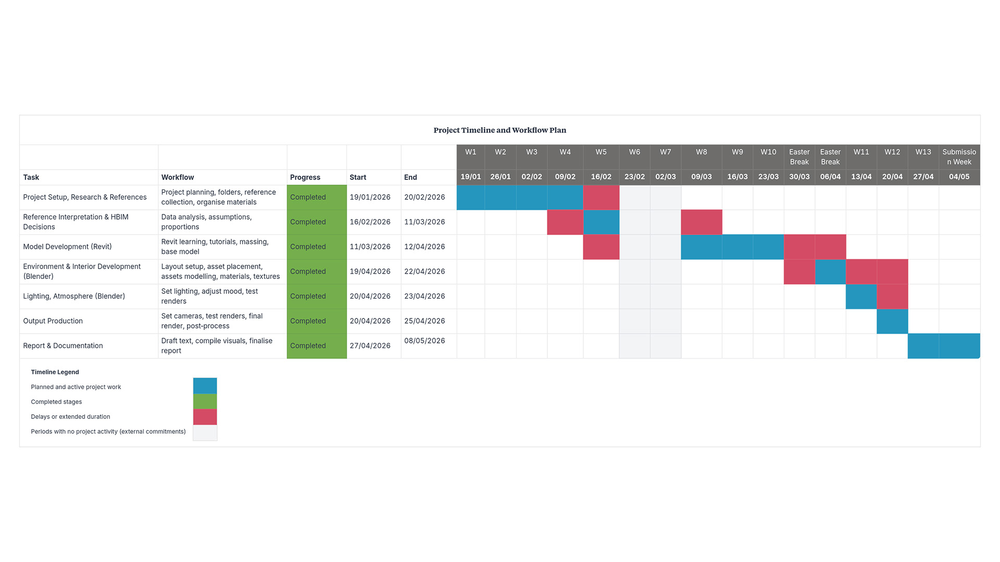
In response to these challenges, the workflow was adjusted to improve efficiency and maintain output quality. One key decision was to reduce scene complexity by shifting certain elements to post-production. Instead of modelling all details in 3D, elements such as people, smoke, fire, and small environmental details were added using Photoshop and AI-supported tools. This reduced rendering load and prevented performance issues, particularly in the interior scene where geometry was already dense.
This approach reflects a more controlled and practical workflow, where decisions are made based on performance, time, and visual outcome. It also demonstrates the ability to combine multiple tools effectively, including Revit, Blender, V-Ray, Substance Sampler, Photoshop, and AI-based tools, each used for a specific purpose within the process.
Overall, the project represents a significant step in professional development. It demonstrates the ability to adopt new software, manage a multi-stage workflow, and make informed decisions when working with both technical constraints and incomplete historical data. The experience gained through this process is directly applicable to architectural visualisation and heritage reconstruction practice.
Digital reconstruction plays an important role in making heritage more accessible. Many historical buildings, including parts of Winchester Castle, no longer exist or are difficult to understand through physical remains alone.
By creating a digital model, the project allows a wider audience to engage with the space in a more understandable way. This supports the idea of democratising access to heritage, where knowledge is not limited to academic or specialist groups.
Digital visualisation also allows complex historical information to be communicated visually, making it easier for non-specialists to understand spatial relationships and building function.
In this context, the project contributes to broader discussions around accessibility and inclusion in heritage, aligning with Sustainable Development Goal 10, which focuses on reducing inequalities in access to knowledge and cultural resources.
The project has been prepared to support further development and reuse. The Revit model is organised into clear architectural elements, including walls, roofs, openings, and structural components, allowing it to be easily understood and modified.
A consistent file naming system has been used to maintain clarity across different stages. The model was exported from Revit in FBX format and transferred into Blender for visual development.
In Blender, the scene is organised into collections separating the architectural model, environment, and assets. This allows individual elements to be adjusted without affecting the full scene and keeps the workflow manageable.
The project can be extended through further interior refinement and the reconstruction of additional internal buildings within Winchester Castle. This includes the King’s Chamber and other service and residential spaces, following the same evidence-informed approach. Animation or walkthrough development could also be explored as a next stage.
This project explored the reconstruction of a lost medieval building using a combination of historical evidence, typological comparison, and digital modelling.
The process highlighted the challenges of working with incomplete information, requiring careful interpretation and decision-making. By combining Revit and Blender, the project developed both a structured architectural model and a visual representation of the space.
The experience also highlighted the importance of workflow planning, tool selection, and critical reflection. While there were challenges, particularly in learning new software and managing time, the final outcome represents a significant improvement in both technical and conceptual development.
Overall, the project demonstrates how digital tools can be used to reconstruct and communicate historical architecture, making it more accessible and understandable.
Generative AI was used in this project in a limited and clearly defined way. Its role was supportive rather than creative. I used AI to help organise workflow steps, clarify technical terminology, and explore early visual ideas during the concept stage. These AI outputs were not treated as historical evidence and did not replace academic research, modelling skills, or critical decision making.
I also used AI during the early stages of learning Revit to clarify terminology, understand basic functions, and troubleshoot simple modelling questions. This support helped me begin the software more confidently; however, I later realised that AI explanations were sometimes vague or inconsistent. Because of this, I returned to structured video tutorials and independent practice, which proved more reliable for developing real technical skill. This made me more aware of the limitations of AI and reinforced the importance of traditional learning methods.
I also used AI to improve clarity, grammar, and structure in my writing. This support helped me express my own ideas more precisely, but the content, arguments, and interpretations remain entirely my own.
I approached AI use responsibly and sustainably. I used it only when it genuinely improved workflow efficiency, and I avoided unnecessary queries to reduce environmental impact. All AI assisted content is acknowledged, dated, and clearly separated from my own authored work.